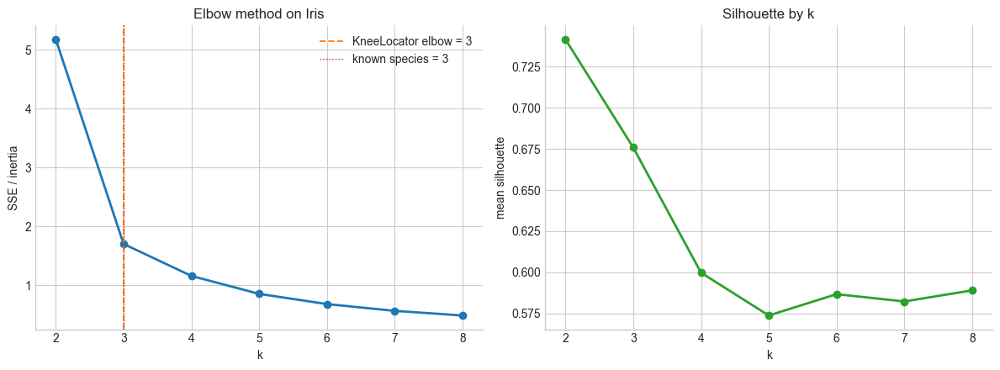
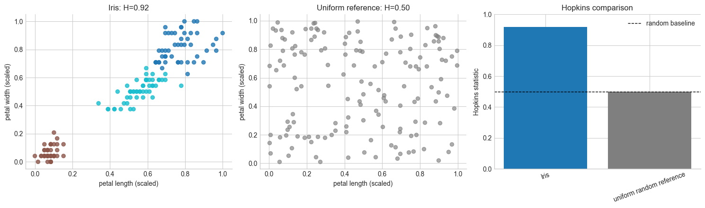
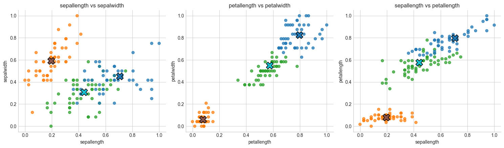
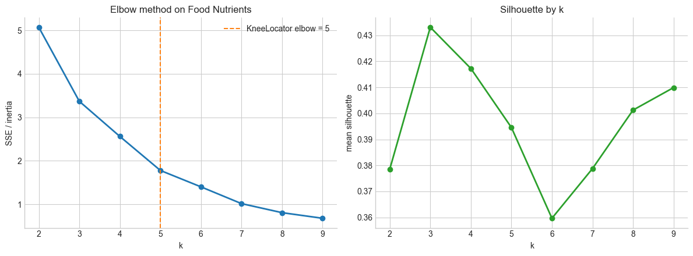
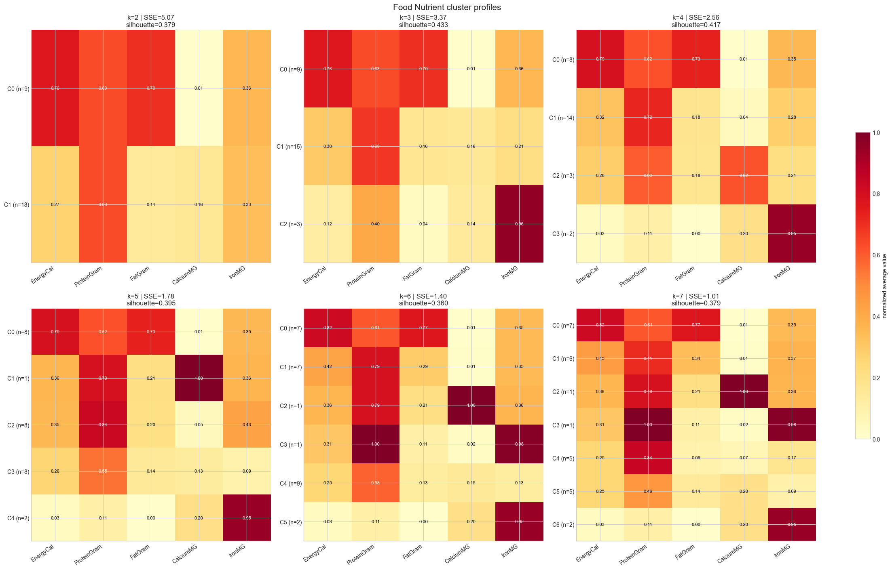
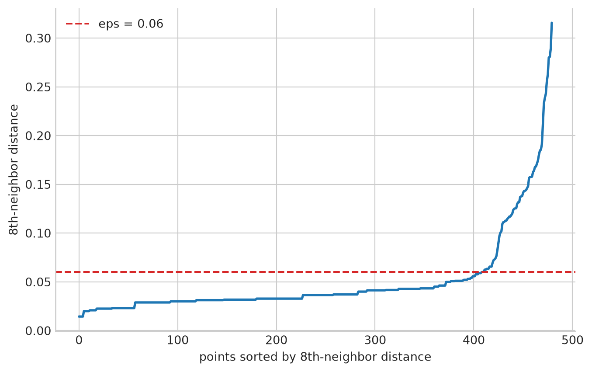
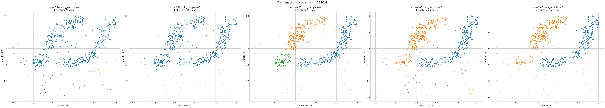

<class 'pandas.DataFrame'>
RangeIndex: 150 entries, 0 to 149
Data columns (total 5 columns):
# Column Non-Null Count Dtype
--- ------ -------------- -----
0 sepallength 150 non-null float64
1 sepalwidth 150 non-null float64
2 petallength 150 non-null float64
3 petalwidth 150 non-null float64
4 class 150 non-null str
dtypes: float64(4), str(1)
memory usage: 6.0 KBMachine Learning and Data Mining (Module I)
Lab 04 - Clustering
Matteo Francia
DISI — University of Bologna
m.francia@unibo.it
DISI — University of Bologna
m.francia@unibo.it

From lecture to lab
From lecture: Clustering and unsupervised validation.
In this lab:
- Choose a meaningful representation and similarity measure
- Compare cluster notions across algorithms
- Check whether discovered groups answer a domain question
We will:
- normalize numeric attributes before Euclidean-distance clustering;
- inspect K-means centroids, per-cluster dispersion, sizes, iterations, and SSE;
- evaluate Iris clusters against the known species without using the species during training;
- interpret Food Nutrient partitions for increasing values of \(k\);
- compare K-means and DBSCAN on the elongated clusters in Coordinates.
The Iris dataset
Iris contains 150 plants, four numeric measurements, and no missing values.
classis excluded from the distance computation and used only after clustering for external evaluation.
Preprocessing: normalize before Euclidean distance
Distance-based algorithms are sensitive to scale.
Code
iris_features = ["petallength", "petalwidth"] # "sepallength", "sepalwidth",
X_iris = iris[iris_features].to_numpy()
y_iris = iris["class"].to_numpy()
iris_scaler = MinMaxScaler()
X_iris_scaled = iris_scaler.fit_transform(X_iris)
feature_index = {name: i for i, name in enumerate(iris_features)}
pd.DataFrame(X_iris_scaled, columns=iris_features).agg(["min", "max"])| petallength | petalwidth | |
|---|---|---|
| min | 0.0 | 0.0 |
| max | 1.0 | 1.0 |
Iris internal validation: elbow and silhouette
Internal metrics are used to compare clusterings without reference to external labels.
- SSE / inertia is the K-means objective, so it must decrease as \(k\) grows.
- Silhouette compares cohesion with separation; larger values are better, but the score still reflects the geometry preferred by the metric.
For a point \(i\):
- \(a(i)\) is the mean distance from \(i\) to the other points in its own cluster;
- \(b(i)\) is the smallest mean distance from \(i\) to the points in any other cluster.
The silhouette of point \(i\) is:
\[ s(i) = \frac{b(i) - a(i)}{\max\{a(i), b(i)\}} \]
The silhouette score of a clustering is the mean of \(s(i)\) over all points. Values close to \(1\) indicate well-separated points, values close to \(0\) indicate points near a decision boundary, and negative values suggest possible misassignment.
Iris internal validation: elbow and silhouette
Code
iris_internal_scores = []
for k in range(2, 9):
model = KMeans(n_clusters=k, n_init=20, max_iter=500, random_state=10)
labels = model.fit_predict(X_iris_scaled)
iris_internal_scores.append({ "k": k, "SSE": model.inertia_, "silhouette": silhouette_score(X_iris_scaled, labels), })
iris_internal_scores = pd.DataFrame(iris_internal_scores)
iris_elbow = KneeLocator(iris_internal_scores["k"], iris_internal_scores["SSE"], curve="convex", direction="decreasing",).elbow
Answer
KneeLocator makes the elbow choice explicit, but the elbow is not always perfectly sharp, which is typical. The large SSE drop from \(k=2\) to \(k=3\) supports three compact groups, while silhouette asks whether each point is closer to its own cluster than to neighboring clusters. These are internal criteria: they do not know the Iris species.
Viswualize the clusterings

K-means when k=3
Iterations to convergence: 5
SSE / inertia: 1.7051
Silhouette: 0.6758| petallength | petalwidth | |
|---|---|---|
| C0 | 0.7740 | 0.8151 |
| C1 | 0.0786 | 0.0600 |
| C2 | 0.5587 | 0.5104 |
Iris cluster-to-class matching
Cluster IDs have no semantic order: we find the one-to-one mapping from clusters to Iris species that maximizes the diagonal of the contingency table.
Given clusters \(C_1, \ldots, C_K\) and true classes \(L_1, \ldots, L_J\), the contingency matrix \(M \in \mathbb{N}^{K \times J}\) is defined as:
\[ M_{ij} = |C_i \cap L_j| \]
Each row describes the true-class composition of one cluster; each column describes how one class is distributed across clusters.
Iris matched-class confusion matrix
Code
| pred: Iris-setosa | pred: Iris-versicolor | pred: Iris-virginica | |
|---|---|---|---|
| true: Iris-setosa | 50 | 0 | 0 |
| true: Iris-versicolor | 0 | 48 | 2 |
| true: Iris-virginica | 0 | 4 | 46 |
Iris external validation: entropy
Because Iris has species labels, we can evaluate the clustering externally after fitting using the contingency matrix.
- Entropy measures how mixed the true classes are inside each cluster: lower is better, and zero means every cluster contains a single species.
Code
| size | entropy | weight | |
|---|---|---|---|
| cluster | |||
| 0 | 48 | 0.2499 | 0.3200 |
| 1 | 50 | -0.0000 | 0.3333 |
| 2 | 52 | 0.3912 | 0.3467 |
Summaryweighted entropy 0.2156
normalized entropy 0.1360
purity 0.9600
dtype: float64Answer
Setosa should have very low entropy because it is visually separated. Most of the remaining entropy comes from the overlap between Versicolor and Virginica, so external validation agrees with the earlier scatter plots.Iris clustering tendency: Hopkins statistic
The lecture warns that clustering algorithms can partition even random data. Hopkins statistic checks whether the data look more clustered than uniformly random points in the same feature space.
- \(H \approx 0.5\): no strong clustering tendency.
- \(H \to 1\): random reference points fall farther from the data than real points do, suggesting cluster structure.
Code
rng = np.random.default_rng(12)
iris_random_reference = rng.uniform(
low=X_iris_scaled.min(axis=0),
high=X_iris_scaled.max(axis=0),
size=X_iris_scaled.shape,
)
iris_hopkins_examples = pd.DataFrame({
"dataset": ["Iris", "uniform random reference"],
"Hopkins": [
hopkins_statistic(X_iris_scaled, sample_size=50, random_state=10),
hopkins_statistic(iris_random_reference, sample_size=50, random_state=10),
],
})
iris_hopkins_examples.round(3)| dataset | Hopkins | |
|---|---|---|
| 0 | Iris | 0.917 |
| 1 | uniform random reference | 0.500 |
Iris clustering tendency: Hopkins statistic

Answer
Iris should score above the random reference because the petal measurements contain visible groups. Hopkins does not choose the number of clusters; it answers the earlier question of whether applying a clustering algorithm is reasonable at all.We repeat K-means using all features.
| features | SSE | class-match accuracy | |
|---|---|---|---|
| 0 | petal only | 1.7051 | 96.0% |
| 1 | all four | 6.9981 | 88.7% |
Answer
- Petal measurements preserve the strong Setosa separation and usually improve the external class match.
- Do not compare the two SSE values directly: they live in spaces with different dimensionality.
Visual analysis across pairs of attributes
- Setosa should appear well separated.
- Versicolor and virginica overlap most strongly on sepal length and sepal width, while the petal measurements provide clearer separation.

The Food Nutrient dataset
The Food Nutrient dataset
The file contains nutritional values per 100 g.
- Following the handout, we normalize the five numeric attributes and fit K-means for \(k=2,3,4,5,6\).
- The cluster numbers below are canonicalized by sorting centroids from high to low energy.
- This makes tables easier to compare across runs.
| EnergyCal | ProteinGram | FatGram | CalciumMG | IronMG | |
|---|---|---|---|---|---|
| 0 | 340.0 | 20.0 | 28.0 | 9.0 | 2.6 |
| 1 | 245.0 | 21.0 | 17.0 | 9.0 | 2.7 |
| 2 | 420.0 | 15.0 | 39.0 | 7.0 | 2.0 |
| 3 | 375.0 | 19.0 | 32.0 | 9.0 | 2.6 |
| 4 | 180.0 | 22.0 | 10.0 | 17.0 | 3.7 |
Food internal validation: elbow and silhouette
As with Iris, we first compare candidate values of \(k\) using internal criteria.
- SSE / inertia decreases as \(k\) grows, so the elbow is more informative than the absolute minimum.
- Silhouette summarizes compactness and separation, but it should be interpreted together with cluster sizes and domain meaning.
Food internal validation: elbow and silhouette

Food cluster average profiles
For each candidate clustering, the table reports cluster size and original-scale average nutrient values.

Answer
Across increasing \(k\), the stable, interpretable profiles are:
- high-energy, high-fat foods;
- high-protein foods with lower fat and energy;
- light but calcium-rich foods;
- a singleton extreme-calcium food when the partition isolates one observation;
- foods with middle-range energy, protein, and fat;
- a light/low-fat but protein-, calcium-, or iron-rich group at the finer partition.
Iron is often weakly characterized because most values are similar and a few high-iron foods dominate its range.
- Small clusters should be treated cautiously: lower SSE alone does not guarantee a useful segmentation.
Verify against the classified file
FoodNutrientsClassified.arff contains descriptive fields (SuperType, preparation, Type, and Name) followed by the same numeric nutrients. They are used only to interpret the already fitted \(k=6\) clusters.
| SuperType | Preparated | Type | Name | EnergyCal | ProteinGram | FatGram | CalciumMG | IronMG | |
|---|---|---|---|---|---|---|---|---|---|
| 0 | MEAT | COOKED | BEEF | BEEF_BRAISED | 340.0 | 20.0 | 28.0 | 9.0 | 2.6 |
| 1 | MEAT | COOKED | BEEF | HAMBURGER | 245.0 | 21.0 | 17.0 | 9.0 | 2.7 |
| 2 | MEAT | COOKED | BEEF | BEEF_ROAST | 420.0 | 15.0 | 39.0 | 7.0 | 2.0 |
| 3 | MEAT | COOKED | BEEF | BEEF_STEAK | 375.0 | 19.0 | 32.0 | 9.0 | 2.6 |
| 4 | MEAT | CANNED | BEEF | BEEF_CANNED | 180.0 | 22.0 | 10.0 | 17.0 | 3.7 |
| 5 | MEAT | BROILED | CHICKEN | CHICKEN_BROILED | 115.0 | 20.0 | 3.0 | 8.0 | 1.4 |
| 6 | MEAT | CANNED | CHICKEN | CHICKEN_CANNED | 170.0 | 25.0 | 7.0 | 12.0 | 1.5 |
| 7 | MEAT | BROILED | BEEF | BEEF_HEART | 160.0 | 26.0 | 5.0 | 14.0 | 5.9 |
| 8 | MEAT | COOKED | LAMB | LAMB_LEG_ROAST | 265.0 | 20.0 | 20.0 | 9.0 | 2.6 |
| 9 | MEAT | COOKED | LAMB | LAMB_SHOULDER_ROAST | 300.0 | 18.0 | 25.0 | 9.0 | 2.3 |
Food by type
Code
| cluster | Name | SuperType | Type | |
|---|---|---|---|---|
| 0 | C0 | BEEF_BRAISED | MEAT | BEEF |
| 1 | C1 | HAMBURGER | MEAT | BEEF |
| 2 | C0 | BEEF_ROAST | MEAT | BEEF |
| 3 | C0 | BEEF_STEAK | MEAT | BEEF |
| 4 | C1 | BEEF_CANNED | MEAT | BEEF |
| 5 | C4 | CHICKEN_BROILED | MEAT | CHICKEN |
| 6 | C1 | CHICKEN_CANNED | MEAT | CHICKEN |
| 7 | C3 | BEEF_HEART | MEAT | BEEF |
| 8 | C1 | LAMB_LEG_ROAST | MEAT | LAMB |
| 9 | C0 | LAMB_SHOULDER_ROAST | MEAT | LAMB |
Food clusters by super type
Food clusters by type
Food cluster members
Code
C0: BEEF_BRAISED, BEEF_ROAST, BEEF_STEAK, LAMB_SHOULDER_ROAST, SMOKED_HAM, PORK_ROAST, PORK_SIMMERED
C1: HAMBURGER, BEEF_CANNED, CHICKEN_CANNED, LAMB_LEG_ROAST, BEEF_TONGUE, VEAL_CUTLET, TUNA_CANNED
C2: SARDINES_CANNED
C3: BEEF_HEART
C4: CHICKEN_BROILED, BLUEFISH_BAKED, CRABMEAT_CANNED, HADDOCK_FRIED, MACKEREL_BROILED, MACKEREL_CANNED, PERCH_FRIED, SALMON_CANNED, SHRIMP_CANNED
C5: CLAMS_RAW, CLAMS_CANNEDCoordinates dataset: K-means
The Coordinates dataset
Coordinates contains 480 two-dimensional points.
Visualizing the data

The Coordinates dataset: K-means
We first repeat the \(k=2\ldots6\) experiment and inspect how SSE changes.
Code
coordinate_features = ["X", "Y"]
coordinate_scaler = MinMaxScaler()
X_coordinates = coordinate_scaler.fit_transform(coordinates[coordinate_features])
coordinate_models = {}
for k in range(2, 7):
model = KMeans(n_clusters=k, n_init=20, random_state=10)
labels = model.fit_predict(X_coordinates)
coordinate_models[k] = (model, labels)
coordinate_sse = pd.DataFrame({ "k": range(2, 7), "SSE": [coordinate_models[k][0].inertia_ for k in range(2, 7)], })
coordinate_sse["SSE reduction"] = coordinate_sse["SSE"].shift(1) - coordinate_sse["SSE"]
coordinate_sse.round(3)| k | SSE | SSE reduction | |
|---|---|---|---|
| 0 | 2 | 29.177 | NaN |
| 1 | 3 | 18.709 | 10.468 |
| 2 | 4 | 12.060 | 6.649 |
| 3 | 5 | 9.539 | 2.520 |
| 4 | 6 | 7.738 | 1.802 |
K-means
Code
fig, axes = plt.subplots(1, 6, figsize=(44, 8))
for ax, k in zip(axes.flat, range(2, 7)):
model, labels = coordinate_models[k]
ax.scatter(X_coordinates[:, 0], X_coordinates[:, 1], c=labels, cmap="tab10", s=16, alpha=.8)
ax.scatter(model.cluster_centers_[:, 0], model.cluster_centers_[:, 1], c="black", marker="X", s=120)
ax.set(title=f"K-means: k={k}, SSE={model.inertia_:.2f}", xlabel="normalized X", ylabel="normalized Y")
axes.flat[-1].plot(coordinate_sse["k"], coordinate_sse["SSE"], marker="o", linewidth=2)
axes.flat[-1].set(title="Elbow curve", xlabel="k", ylabel="SSE")
plt.tight_layout()
plt.show()
K-means conclusion
SSE necessarily decreases as \(k\) grows, with diminishing improvements around the handout’s suggested \(k\approx5\).
- But the plots expose the more important limitation: K-means divides elongated natural groups into compact Voronoi regions.
- Adding centroids reduces SSE by slicing the shapes rather than discovering their full extent.
- A density-based method is preferable.
The Coordinates dataset: DBSCAN
DBSCAN replaces a chosen number of clusters with two density parameters:
eps: neighborhood radius,min_samples: minimum number of points (including the point itself) needed to define a core point.- A k-distance plot helps identify a bend for min_samples=8.

DBSCAN
The handout explores (eps, minPts) values (0.10,4), (0.10,8), (0.05,4), (0.06,3), and (0.06,8) on normalized coordinates.

| eps | min_samples | clusters | noise points | noise % | silhouette (non-noise) | |
|---|---|---|---|---|---|---|
| 0 | 0.10 | 4 | 4 | 9 | 1.9% | 0.012 |
| 1 | 0.10 | 8 | 1 | 44 | 9.2% | n/a |
| 2 | 0.05 | 4 | 3 | 58 | 12.1% | 0.396 |
| 3 | 0.06 | 3 | 9 | 29 | 6.0% | -0.033 |
| 4 | 0.06 | 8 | 2 | 55 | 11.5% | 0.395 |
DBSCAN interpretation
Answer
The plots reproduce the handout’s parameter reasoning:
eps=0.10, min_samples=4: neighborhoods connect too easily, so distinct dense areas merge;eps=0.10, min_samples=8: the stronger density requirement helps with noise but the radius can still bridge natural groups;eps=0.05, min_samples=4: the small radius and low threshold can fragment dense shapes;eps=0.06, min_samples=3: the density threshold is too permissive to reject noise reliably;eps=0.06, min_samples=8: best balance among the tested settings, recovering elongated clusters while rejecting sparse points.
label == -1). Its parameters are scale-dependent, which is why the same normalization used by the handout is essential.
Takeaways
- Normalize before Euclidean-distance clustering when attributes have different ranges.
- Read K-means beyond a single score: inspect centroids, dispersion, sizes, stability, and geometry.
- Known labels may evaluate a clustering, but they must not enter the clustering features.
- SSE always falls with larger \(k\); look for diminishing returns and whether clusters remain meaningful.
- K-means favors compact center-based clusters. DBSCAN is better suited to elongated shapes and explicit noise.
- Cluster IDs are arbitrary. Interpret a cluster through its profile and members, not its number.
MLDM Module I - M. Francia - A.Y. 2026/27